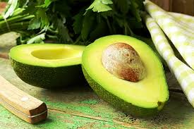

Avocado

- The avocado, a tree likely originating from south-central Mexico, is classified as a member of the flowering plant family Lauraceae. The fruit of the plant, also called an avocado, is botanically a large berry containing a single large seed.
- Avocados may have a range of health benefits, including improving digestion, decreasing the risk of depression, and protecting against cancer.
- Avocados provide a substantial amount of monounsaturated fatty acids and are rich in manyTrusted Source vitamins and minerals. Incorporating them into a varied, healthy diet can provide a number of benefits.
- Avocados are a source of vitamins C, E, K, and B6, as well as riboflavin, niacin, folate, pantothenic acid, magnesium, and potassium. They also provide lutein, beta carotene, and omega-3 fatty acids.
- Avocados contain high levels of healthy, beneficial fats, which can help a person feel fullerTrusted Source between meals. Eating fat slows the breakdown of carbohydrates, which helps keep blood sugar levels stable
- Avocados contain lutein and zeaxanthinTrusted Source, two phytochemicals present in eye tissue. They provide antioxidant protection to help minimize damage, including from UV light.
- The monounsaturated fatty acids in avocados also support the absorption of other beneficial fat-soluble antioxidants, such as beta carotene. As a result, adding avocados to the diet may help reduce the risk of developing age-related macular degeneration.